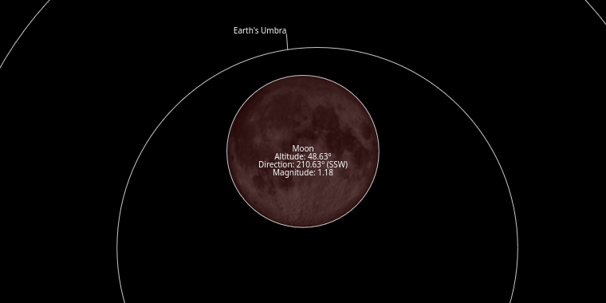
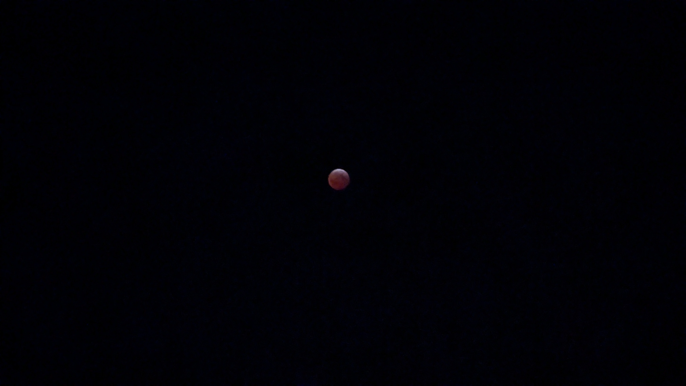
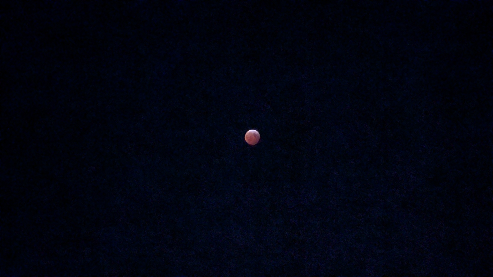
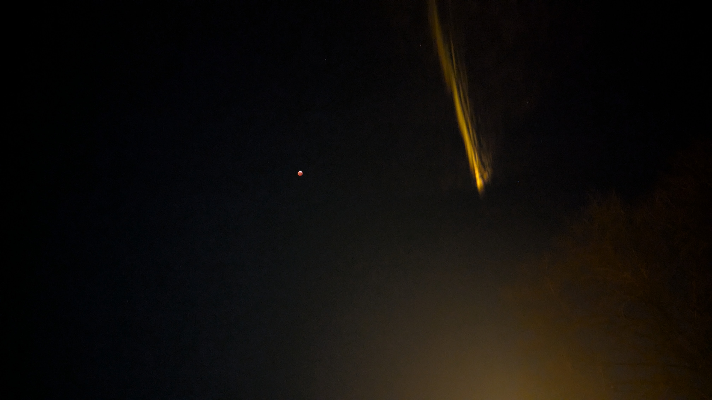

Lunar Eclipse
Date: March 14, 2025 at Upper Arlington, Columbus, Ohio
I stayed awake until 3 AM on March 14.
This is how it looks like in prediction.

This is the pictures that I took, using my Google Pixel, zoomed in 5X.


For some reason, if I don’t zoom in, I can see the light beside the moon, which isn’t visible to the naked eye but can be captured by the camera.

Article tags: